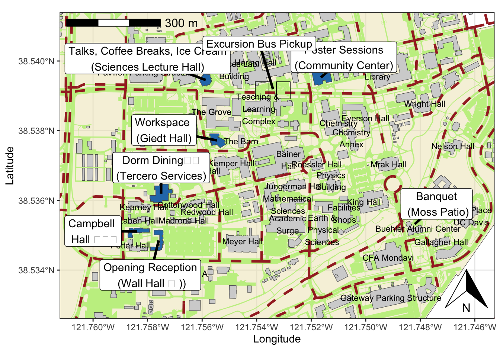
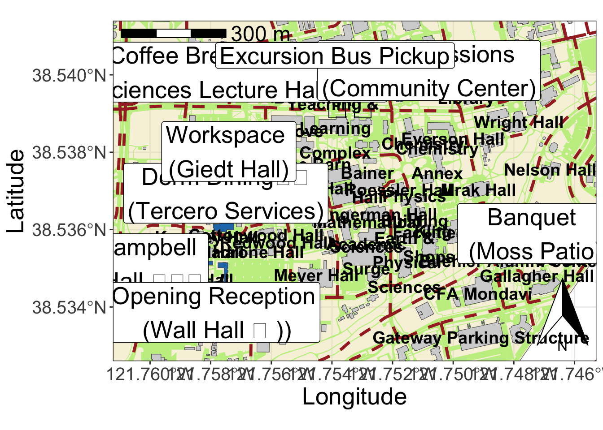

library(sf)Linking to GEOS 3.11.0, GDAL 3.5.3, PROJ 9.1.0; sf_use_s2() is TRUEyolo <- sf::read_sf("Yolo_County_Street_Centerlines_Open_Data/Yolo_County_Street_Centerlines_Open_Data.shp")
#plot(yolo$geometry)library(sf)Linking to GEOS 3.11.0, GDAL 3.5.3, PROJ 9.1.0; sf_use_s2() is TRUEyolo <- sf::read_sf("Yolo_County_Street_Centerlines_Open_Data/Yolo_County_Street_Centerlines_Open_Data.shp")
#plot(yolo$geometry)ucd <- st_transform(sf::read_sf("UC_Davis_Campus_Boundary/UC_Davis_Campus_Boundary.shp"),
st_crs(yolo))
## filter to bulk of campus
#ucd <- ucd[1,]
ucd_bldgs <- st_transform(sf::read_sf("UC_Davis_Building_Footprints/UC_Davis_Building_Footprints.shp"), st_crs(yolo))
#https://data-ucda.opendata.arcgis.com/datasets/ucda::uc-davis-roads-pathways/explore?location=38.536141%2C-121.755256%2C17.84
ucd_paths <- st_transform(sf::read_sf("UC_Davis_Roads_Pathways/UC_Davis_Roads_Pathways.shp"), st_crs(yolo))
library(gghighlight)Loading required package: ggplot2library(ggsflabel)
Attaching package: 'ggsflabel'The following objects are masked from 'package:ggplot2':
geom_sf_label, geom_sf_text, StatSfCoordinateslibrary(ggspatial)## zoom
zoom <- st_bbox(ucd_bldgs)
zoom[1] <- -121.7605
zoom[2] <- 38.533
zoom[3] <- -121.746
zoom[4] <- 38.541
FPSAC_bldg_info <- data.frame(ID = c(386, 1029, 1030, 972, 1036, 246, 968,
1557),
name = c("Talks, Coffee Breaks, Ice Cream\n(Sciences Lecture Hall)",
"Campbell \n Hall 🛏️",
"Opening Reception\n (Wall Hall 🛏 )",
"Dorm Dining🍴\n(Tercero Services)",
"Poster Sessions\n(Community Center)",
"Banquet\n (Moss Patio)",
"Workspace \n(Giedt Hall)",
"Excursion Bus Pickup"))
FPSAC_bldgs <- ucd_bldgs[FPSAC_bldg_info$ID,]
FPSAC_bldgs$label <- FPSAC_bldg_info$name
FPSAC_bldgs$plotid <- 1:nrow(FPSAC_bldgs)
## get coords manually once, then paste label.x/label.y
# plot(FPSAC_bldgs$geometry, col = "blue"); plot(yolo$geometry, add = T);
# coords <- locator((nrow(FPSAC_bldgs)))
# cat(coords$x, sep = ",")
# cat(coords$y, sep = ",")
FPSAC_bldgs$label.x <- c(-121.758,-121.76,-121.7579,-121.7575,-121.7508,-121.7474,-121.7574,-121.7539)
FPSAC_bldgs$label.y <- c(38.54007,38.53512,38.53386,38.53694,38.54011,38.5359,38.53802,38.5405)
# devtools::install_github("yutannihilation/ggsflabel")
ucd_bldgs$id <- 1:nrow(ucd_bldgs)
segment.ends <- data.frame(st_coordinates(st_centroid(FPSAC_bldgs$geometry)))
segment.ends[8,] <- c(-121.7534, 38.53919)
segment.ends[6,] <- c(-121.7482,38.53532)
## get ids from visual inspection of geom_sf_text(data = ucd_bldgs, aes(label = id),size = 4)
ids <- c(436, 588, 717, 1153, 1155, 1156, 436, 347, 333, 685, 1127, 1033, 1003, 623, 194, 920, 1112, 1104, 659, 603, 1557, 1133, 1034, 1134, 667, 975, 1004, 921, 605, 526, 576, 1031, 919, 450, 246, 1176, 425, 598, 566, 616)
bldg_labels <- ucd_bldgs[ids,]
bldg_labels$name <- bldg_labels$arcgisDB12
bldg_labels$name[10] <- "Academic\nSurge"
bldg_labels$name[13] <- "Earth &\n Physical\nSciences"
bldg_labels$name[19] <- "Mathematical\nSciences"
bldg_labels$name[21] <- "Teaching &\n Learning\n Complex"
bldg_labels$name[36] <- "Hyatt Place\n UC Davis"
bldg_labels$name[38] <- ""
bldg_labels$name[40] <- "Physics\nBuilding"
bldg_labels$name[25] <-"Facilities\nShops"
bldg_labels$name[11] <- "Shields\nLibrary"
bldg_labels$name[8] <- "Sciences Lab \n Building"
bldg_labels$name[2] <- "Bainer\nHall"
bldg_labels$name[30] <- "Chemistry\nAnnex"
g<- ggplot() +
geom_sf(data = ucd, fill = "#ede4b980") +
geom_sf(data = ucd_paths, fill = "#c4ee90", col = "#FFFFFF00") +
geom_sf(data = ucd_bldgs, fill = "lightgrey") +
geom_sf(data = yolo, lty = 2, col = "brown", lwd = 1.2) +
geom_sf(data = FPSAC_bldgs[c(1:5, 7),], fill = "#287AB8")+
geom_spatial_segment(data = FPSAC_bldgs, aes(x = label.x, y = label.y,
xend = segment.ends$X,
yend = segment.ends$Y), lwd = 1.2)+
geom_sf_text(data = FPSAC_bldgs, aes(y = 38.5392, x =-121.7534, label = "🚌"),
size = 10)+
geom_sf_text(data = bldg_labels, aes(label = name),
size = 3) +
ggsflabel::geom_sf_label(data = FPSAC_bldgs, aes(label = FPSAC_bldgs$label, x = label.x, y = label.y)) +
coord_sf(xlim = zoom[c(1,3)], ylim = zoom[c(2,4)]) +
theme_bw() +
#geom_sf_text(data = ucd_bldgs, aes(label = id),size = 4)+
#geom_sf_label(data = FPSAC_bldgs, aes(label = FPSAC_bldgs$label)) +
annotation_north_arrow(which_north = "grid", location = "br") +
annotation_scale(location = "tl", text_cex = 1) +
ylab("Latitude") + xlab("Longitude");gWarning: Use of `FPSAC_bldgs$label` is discouraged.
ℹ Use `label` instead.Assuming `crs = 4326` in stat_spatial_segment()Warning in st_point_on_surface.sfc(data$geometry): st_point_on_surface may not
give correct results for longitude/latitude dataWarning in st_point_on_surface.sfc(data$geometry): st_point_on_surface may not
give correct results for longitude/latitude data
Warning in st_point_on_surface.sfc(data$geometry): st_point_on_surface may not
give correct results for longitude/latitude data
library(ggplot2)
library(ragg)
g<- ggplot() +
geom_sf(data = ucd, fill = "#ede4b980") +
geom_sf(data = ucd_paths, fill = "#c4ee90", col = "#FFFFFF00") +
geom_sf(data = ucd_bldgs, fill = "lightgrey") +
geom_sf(data = yolo, lty = 2, col = "brown", lwd = 1.2) +
geom_sf(data = FPSAC_bldgs[c(1:5, 7),], fill = "#287AB8")+
geom_spatial_segment(data = FPSAC_bldgs, aes(x = label.x, y = label.y,
xend = segment.ends$X,
yend = segment.ends$Y), lwd = 1.2)+
geom_sf_text(data = FPSAC_bldgs, aes(y = 38.5392, x =-121.7534, label = "🚌"),
size = 10)+
geom_sf_text(data = bldg_labels, aes(label = name),
size = 5, fontface = "bold") +
ggsflabel::geom_sf_label(data = FPSAC_bldgs, aes(label = FPSAC_bldgs$label, x = label.x, y = label.y), size = 7) +
coord_sf(xlim = zoom[c(1,3)], ylim = zoom[c(2,4)]) +
theme_bw() +
#geom_sf_text(data = ucd_bldgs, aes(label = id),size = 4)+
#geom_sf_label(data = FPSAC_bldgs, aes(label = FPSAC_bldgs$label)) +
annotation_north_arrow(which_north = "grid", location = "br", height = unit(2.2, "cm")) +
annotation_scale(location = "tl", text_cex = 1.5) +
ylab("Latitude") + xlab("Longitude") +
theme(axis.text = element_text(size = 15), axis.title = element_text(size =20));gWarning: Use of `FPSAC_bldgs$label` is discouraged.
ℹ Use `label` instead.Assuming `crs = 4326` in stat_spatial_segment()Warning in st_point_on_surface.sfc(data$geometry): st_point_on_surface may not
give correct results for longitude/latitude dataWarning in st_point_on_surface.sfc(data$geometry): st_point_on_surface may not
give correct results for longitude/latitude data
Warning in st_point_on_surface.sfc(data$geometry): st_point_on_surface may not
give correct results for longitude/latitude data
## NOTE: run "g" on console to then ggsave the best quality image, not in chunk output in Rstudio
ggsave("FPSAC_map_23.png", device = agg_tiff)Saving 7 x 5 in imageWarning: Use of `FPSAC_bldgs$label` is discouraged.
ℹ Use `label` instead.Assuming `crs = 4326` in stat_spatial_segment()Warning in st_point_on_surface.sfc(data$geometry): st_point_on_surface may not
give correct results for longitude/latitude data
Warning in st_point_on_surface.sfc(data$geometry): st_point_on_surface may not
give correct results for longitude/latitude data
Warning in st_point_on_surface.sfc(data$geometry): st_point_on_surface may not
give correct results for longitude/latitude dataHere’s how it looks when you open it using the computer’s image viewer: